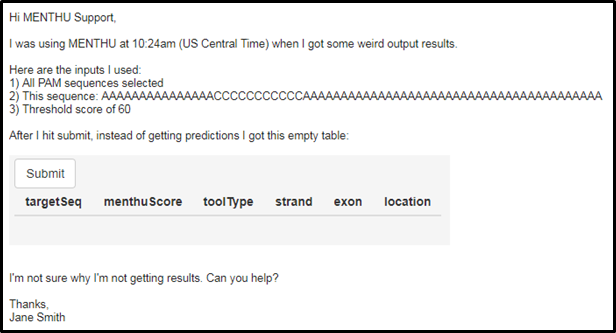
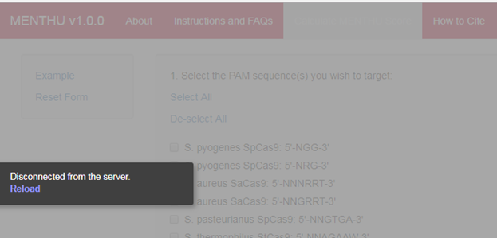
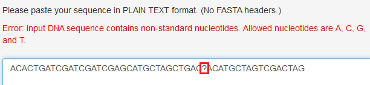

A Guide to Writing Helpful Bug Reports
By Carla Mann, 09/21/2017
In your bug report email, please include an email header with:
Example of a helpful email header:
MEDJED Bug Report: Site crashes when submitting lowercase sequence
Example of a not-helpful email header:
the website crashed
In the body of the email, please include:
Example of a Helpful Bug Report:

For reference, a website crash looks like this:

Red error messages look like this:

Error messages appear in red. These are FEATURES, not bugs – these messages appear in order to let you know that there is an issue with one or more of your inputs that prevents you from getting results. Error messages will tell you what the problem with the input is, and give you an idea of how to fix the error(s). GTagHD, MEDJED, and MENTHU will not process inputs via the submit button if there are any red error messages present.